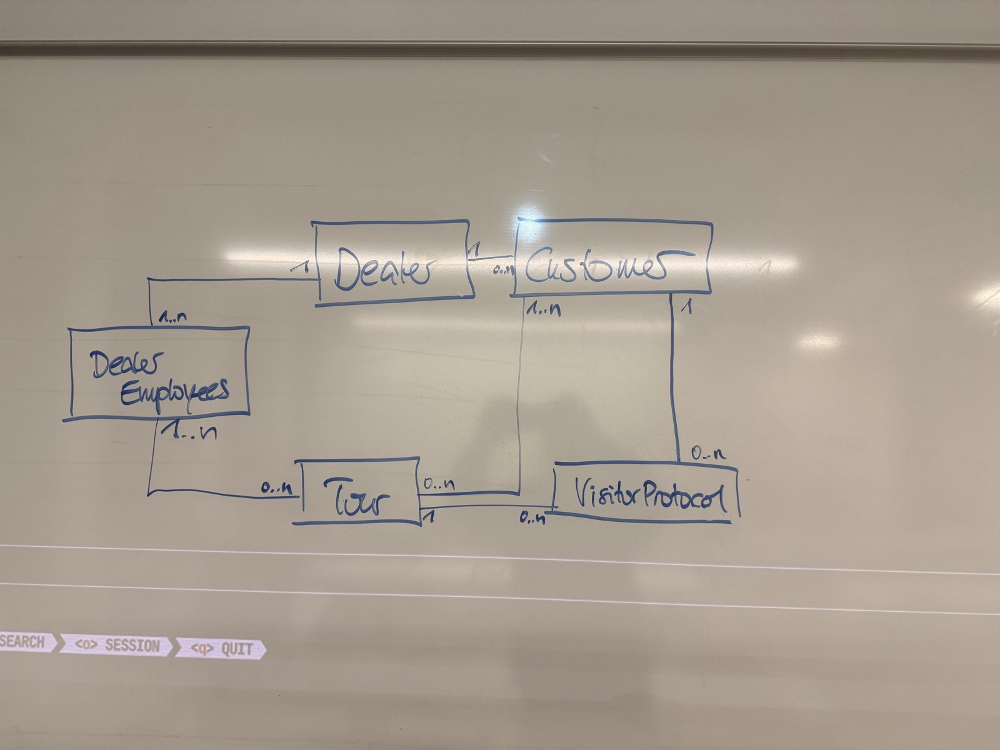

TerraMax Database Schema
Entity-relationship model of the TerraMax service, transcribed from the whiteboard sketch.
erDiagram
Dealer ||--|{ DealerEmployee : employs
Dealer ||--o{ Customer : serves
DealerEmployee }|--o{ Tour : drives
Customer }|--o{ Tour : "visited on"
Customer ||--o{ VisitorProtocol : "documented in"
Tour ||--o{ VisitorProtocol : produces
Relationships
| From | Cardinality | To | Meaning |
|---|---|---|---|
| Dealer | 1 : 1..n | DealerEmployee | A dealer has at least one employee. |
| Dealer | 1 : 0..n | Customer | A customer belongs to exactly one dealer. |
| DealerEmployee | 1..n : 0..n | Tour | A tour is run by one or more employees (many-to-many). |
| Customer | 1..n : 0..n | Tour | A tour visits one or more customers (many-to-many). |
| Customer | 1 : 0..n | VisitorProtocol | Each protocol is about exactly one customer. |
| Tour | 1 : 0..n | VisitorProtocol | Each protocol is created during exactly one tour. |
Notes
- The whiteboard shows entities and cardinalities only; attributes are not yet defined.
- The two many-to-many relationships need join tables in a relational implementation, e.g.
tour_employeeandtour_customer.
Original whiteboard photo
